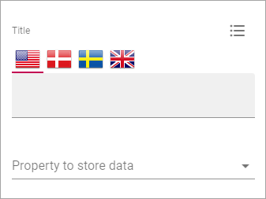
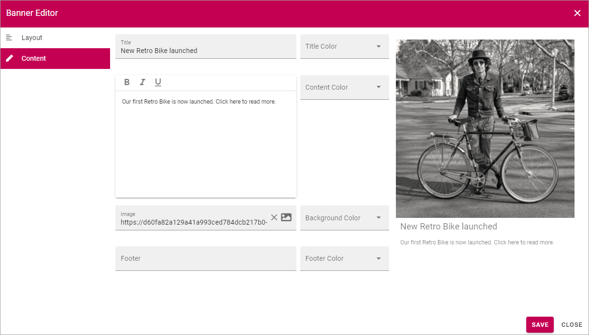
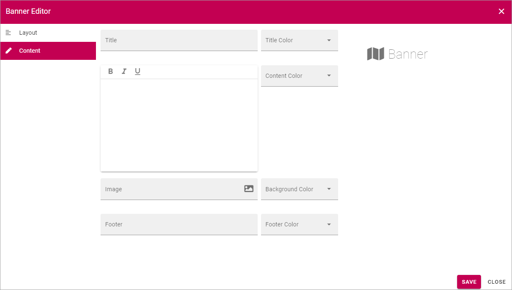

Banner¶
Using the Banner block an editor can add banners on a web page.

You add a Banner block the same way as any other blocks, see Working with blocks
Editing an existing banner¶
When a page is edited in Write mode a banner can be edited by clicking the pen icon:
The Banner Editor opens and you can use the same settings as when adding content to a new banner, see below.
Banner settings¶
The following Banner settings are available (also see The Banner Editor, below):
- Title: If a title should be shown for the block, add it in this field. If no variation exists for the page, it looks like in the image above and you can set the title in the languages active in the tenant. If variations exists, only one title can be set. In that case, titles in other languages are set in the variations.
- Property to store data: Select type of Property to connect the Banner to. When one block on the page has data connected to a Property, that data can be reused in all blocks that uses the same Property. Page scoped. Not mandatory.
The Layout tab and the Advanced tab contains general block settings. See this page for more information: General block settings
Adding content to a new banner¶
You add content to a new banner this way:
- click “ADD CONTENT”.

You can do this in either Write mode or Design mode.
The Banner Editor starts and you use it to add the contents, see below.
The Banner Editor¶
You use the Banner Editor to edit the banner’s contents. You do it the same way for existing and newly added banners. As you edit the banner you can see a preview to the right.
The Layout tab¶
Here you can edit the following:
- Layout: Defines the Layout of the banner:
- “Image On Top”; Displays a big image at the top, above title, content and footer, best suitable for landscape image.
- “Title and Content on image”; The image covers the whole banner area, title and content are placed as an overlay.
- “Title on image”; In this case only the title is placed as an overlay.
- Padding: You can set some padding for the text in the banner here.
- Link: Add the link to open, if any, when the user clicks the banner. When you click the icon to the right in the field, the Add Link general asset openes, see: Add Link
- New Window: Defines whether the link should be opened in a new window or not.
The Content tab¶
Here you can add a title, an image, a text and a footer, and set colors.
Regarding the content - the formatting options can vary depending on settings for Limited RTF done in Omnia Admin, see the heading “RTF Editor” on this page: Tenant Settings
When you click the icon to add an image, the media picker starts, see this page for more information: The Media Picker
Don’t forget to save when you’re done.